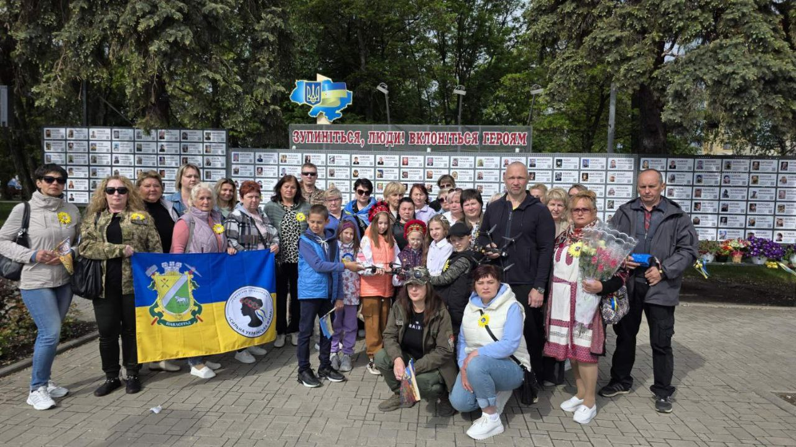
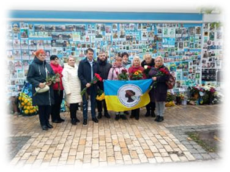

Наш буклет


Павлоградщини
Підтримка родин загиблих Героїв України. Разом ми сильні. Разом ми пам’ятаємо.
Організація
ГО "СУМ"
код ЄДРПОУ 44529908,
було зареєстровано 06.01.2022.
02222, місто Київ, вулиця Драйзера Теодора, будинок 32, квартира 96.
Керівником ГРОМАДСЬКОЇ ОРГАНІЗАЦІЇ
"СИЛЬНА УКРАЇНСЬКА МАМА" є
Кравчук Вікторія Миколаївна.
Павлоградський осередок:
gosumpavlograd@gmail.com
Представник:
Ізмаїлова Світлана Володимирівна
+380666614588
Група в Viber: СИЛЬНА УКРАЇНСЬКА МАМА
Група в Telegram: Незламні родини
Група на Facebook: ГО "СИЛЬНА УКРАЇНСЬКА МАМА" Дніпропетровська, Запорізька області
Що ж ви так, найдорожчі?... В небі кривавий слід... Йдуть і дівчата, й хлопці У неземний похід. Світлом на чорнім полі Поміж вогню і вирв... Біль схилив скроні Янголам потріблив... З тугою піднебесся Лиш журавлі... Лиш у матусі в серці Діти завжди живі...
створена на підтримку родин, які втратили рідних та близьких в російсько-українській війні
Чуємо, розуміємо,
підтримуємо, допомагаємо.
Співпрацюємо з музеєм російсько-української війни «У ДІДА»
Підтримуємо одна одну, бо хто краще, як не мама і дружина, що втратила свій всесвіт, зрозуміє іншу таку ж маму та дружину в розпачі?
На різних рівнях вшановуємо пам'ять наших Героїв, продовжуючи їм життя, адже доки їх пам'ятають вони живі!
Проводимо акції в пам’ять про Героїв, що повернулися «На щиті», висвітлюємо їх в соцмережах, щоб містяни не забували завдяки кому живуть відносно мирно. Щоранку проводимо хвилину мовчання в центрі міста..
На сьогодні ГО об'єднує вже більше сотні павлоградських родин.
Не замикайся в своєму горі…
Допомагаємо захисникам та захисницям України: дронами, ліками, смаколиками
Зустрічаємося з депутатами місцевої та ВР, представниками Міністерства ветеранів, вирішуючи проблеми родин загиблих.

Сайт був створений Вікторією, племінницею Пересади Владислава Миколайовича — загиблого Захисника України, в пам'ять про полеглих Героїв Павлоградского району. Це віртуальний простір, який покликаний зберегти пам'ять про тих, хто, не вагаючись, став на захист рідної землі, проявивши найвищий прояв мужності та відданості. Вони віддали найдорожче — своє життя — заради миру, свободи й майбутнього наступних поколінь. Цей сайт не лише вшановує їхній подвиг, а й нагадує кожному з нас про ціну нашої незалежності та силу людського духу. Наші Герої стали частиною Небесного Війська — незламного строю світлих душ, які продовжують боронити Україну з небес. Їхній подвиг живе у наших серцях, їхні імена вписані у вічність, а їхня жертовність є джерелом сили для кожного українця.